Префектура Оита · Юфуин · еда
Где поесть в Юфуине: пять адресов для тех, кто приехал надолго
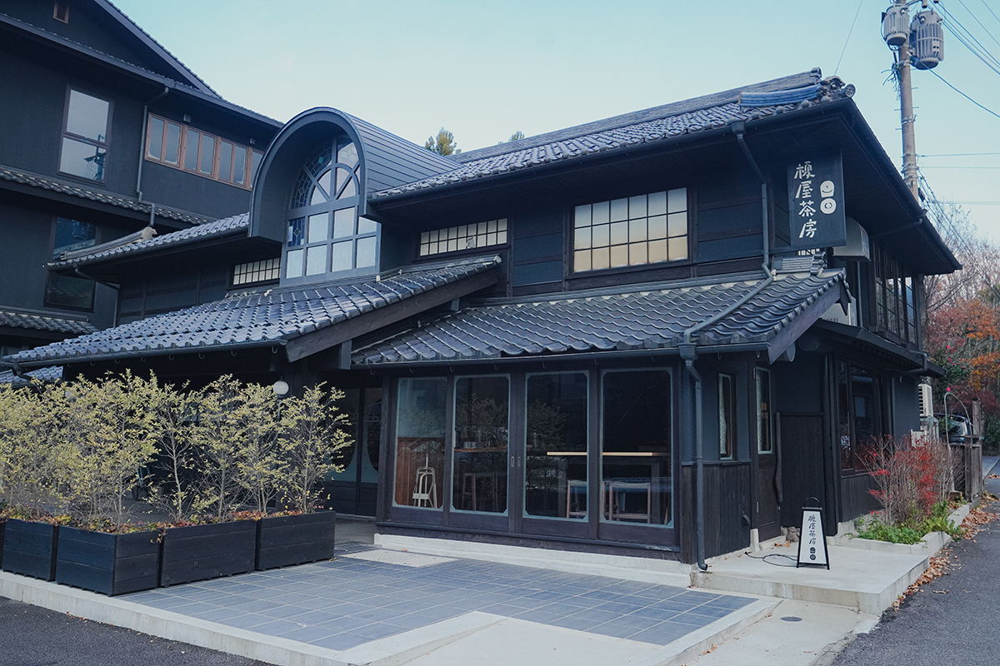
Когда живёшь в Юфуине несколько дней, выбирать, где и что есть, становится отдельным удовольствием. В курортном городке найдётся всё: завтрак и обед, ужин и бар, еда навынос, кофе и сладости.
Весь день
«Эноки-я сабо»: от завтрака до паба
Кафе «Эноки-я сабо» открылось в мае 2023 года вместе с обновлённым рёканом Enokiya, и заходить сюда могут не только постояльцы. Утром с 7:30 здесь подают завтрак, днём обед, а вечером зал превращается в паб, который работает до 22:30.
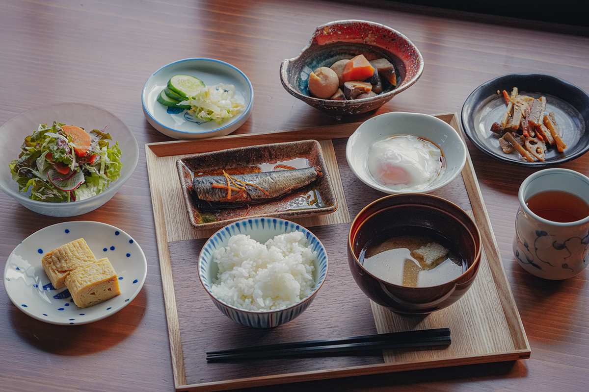
Завтрак японский, мягкий и согревающий, с рисом, который хозяева выращивают сами. Зал устроен в бывшей прихожей рёкана, и свет через витражи падает здесь особенно красиво. На полках в глубине стоят книги о народных ремёслах мингэй, которые подобрал книжный магазин из города Оита. На верхнем этаже можно неспешно посидеть у старинных решётчатых окон, глядя на общественную купальню напротив.
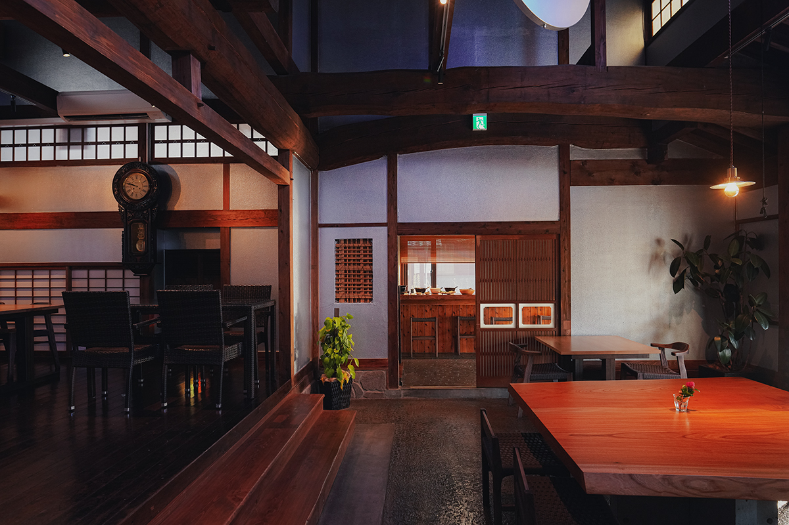
«Эноки-я сабо»
- Адрес
- префектура Оита, город Юфу, Юфуин-мати, Каваками, 1086-2
- Телефон
- +81 977-85-2285
- Часы работы
- завтрак 7:30–9:30, обед 11:30–13:30, вечер 18:00–21:30 (время последнего заказа)
- Выходные
- завтрак без выходных; обеда нет со вторника по пятницу; паб закрыт по средам и четвергам (бывают дополнительные выходные)
Италия
«Минами-но кадзэ»: домашняя кухня, есть навынос
Это ресторан итальянской домашней кухни, где хочется есть каждый день. Вкусно здесь именно так, как и должно быть вкусно, без лишних эффектов. Овощи выращивают местные фермеры без химикатов, яйца от кур свободного выгула, мясо с экологической фермы, рыба и морепродукты с полуострова Кунисаки, сыр из самого Юфуина.
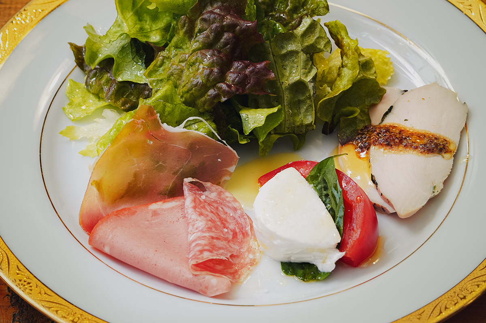
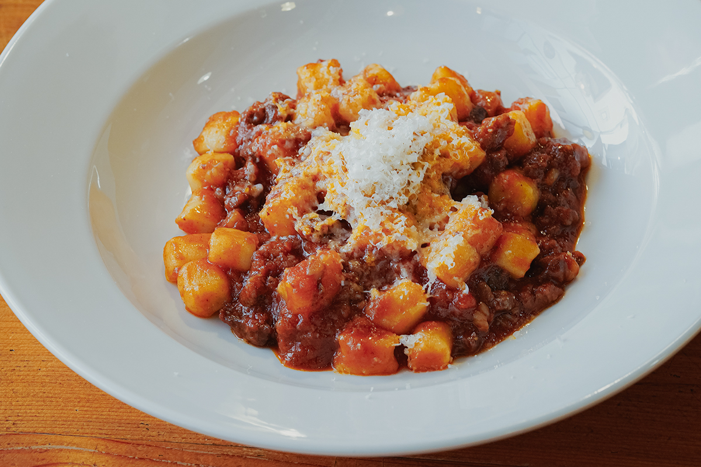
От ньокки трудно оторваться, а пицца такая лёгкая, что вино уходит само собой. Сюда заходит и журналистка, которая когда-то познакомила Японию с движением слоу-фуд: бывая в Юфуине, она обязательно здесь обедает. Ресторан готовит навынос и подаёт завтраки, так что пригодится на любой день поездки.
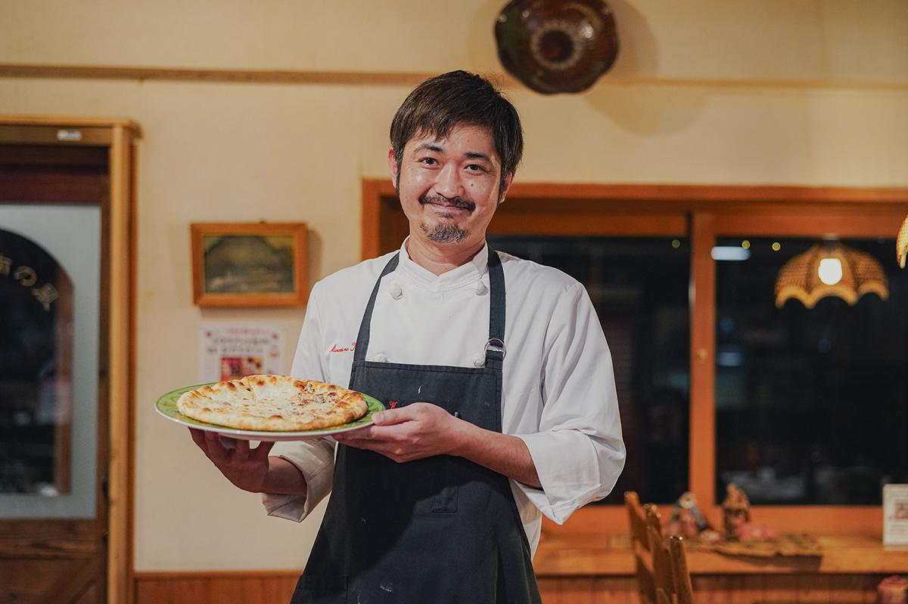
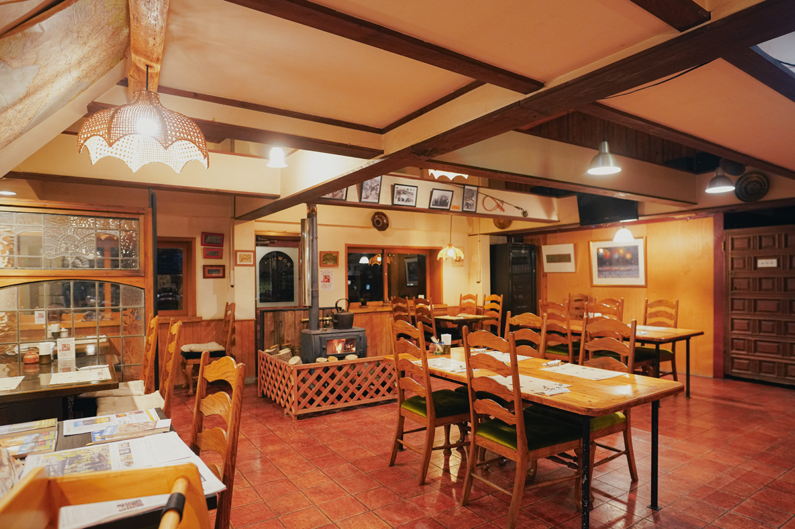
«Минами-но кадзэ»
- Адрес
- префектура Оита, город Юфу, Юфуин-мати, Каваками, 3616
- Телефон
- +81 977-84-5301
- Часы работы
- 10:00–22:00
- Выходные
- вторник
Якитори
CARNE: повар из рёкана у гриля
Шпажки якитори под бокал: когда живёшь в онсэне несколько ночей подряд, бывает и такой вечер. Сев за стол, первым делом стоит изучить доску. На ней перечислены части местной курицы «Тоё-но сямо», которых осталось ограниченное число, вплоть до редких, и знатоки сначала заказывают именно их.
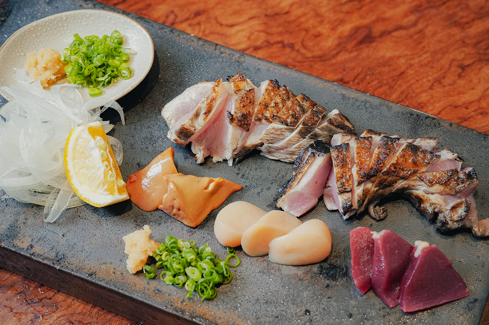
Свежая курица хороша и в виде сашими, слегка обожжённого снаружи. Ещё одно фирменное блюдо: сырой сладкий хрустящий перец, начинённый мясным фаршем и щедро засыпанный пармезаном. Его можно смело заказывать к вину.
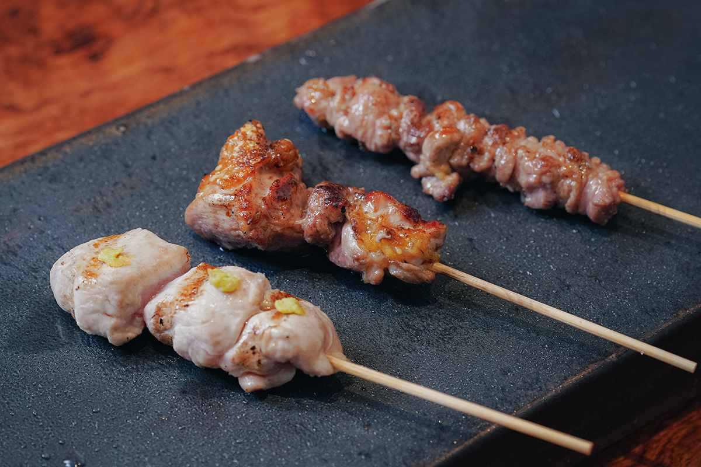
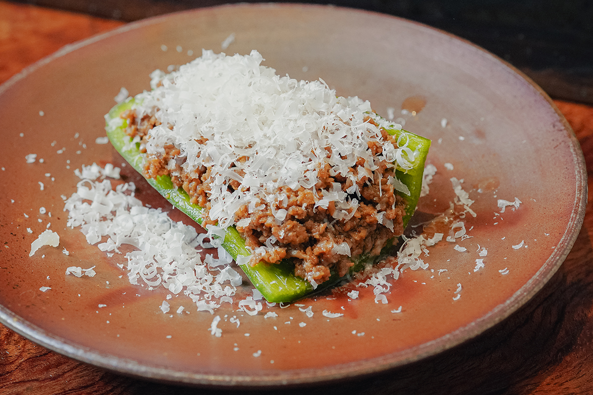
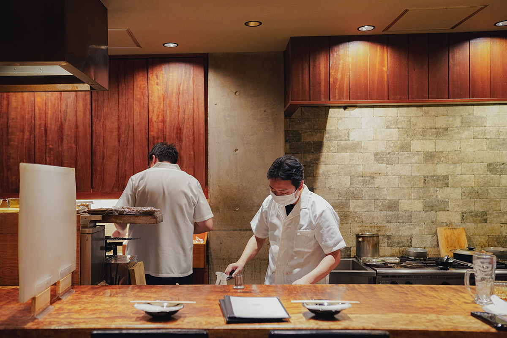
CARNE
- Адрес
- префектура Оита, город Юфу, Юфуин-мати, Каваками, 3725-5
- Телефон
- +81 977-85-7540
- Часы работы
- 17:30–22:00, в субботу с 17:00
- Выходные
- воскресенье
Обед
«Хидамари сёкудо»: столовая при фермерском рынке
Когда живёшь в поездке долго, начинает не хватать простого обеда, какой готовит дома мама. «Хидамари сёкудо» работает при рынке, где сельскохозяйственный кооператив продаёт продукты фермеров, и одинаково приветлива к местным жителям и путешественникам. От станции Юфуин сюда пара минут пешком, так что можно зайти по пути за покупками.
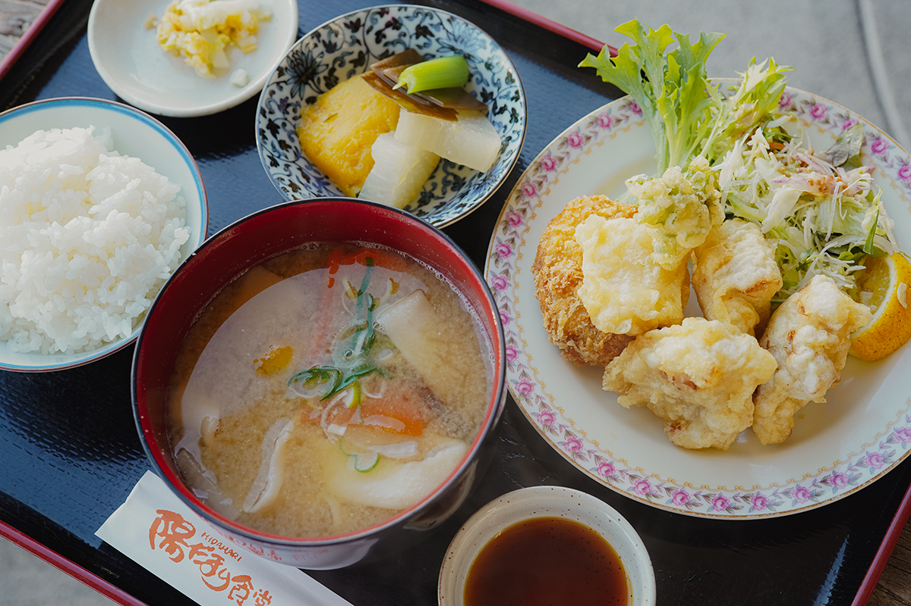
Самый популярный обед «Хидамари тэйсёку» стоил 1 100 иен в 2024 году. В него входит дангодзиру, суп с тонкими гладкими и упругими лентами из теста и большим количеством овощей Юфуина. К нему подают тори-тэн, сочную курицу в кляре прямо из фритюра, и крокет с говядиной бунго-гю и корнем лопуха. После такого обеда долго не хочется есть.
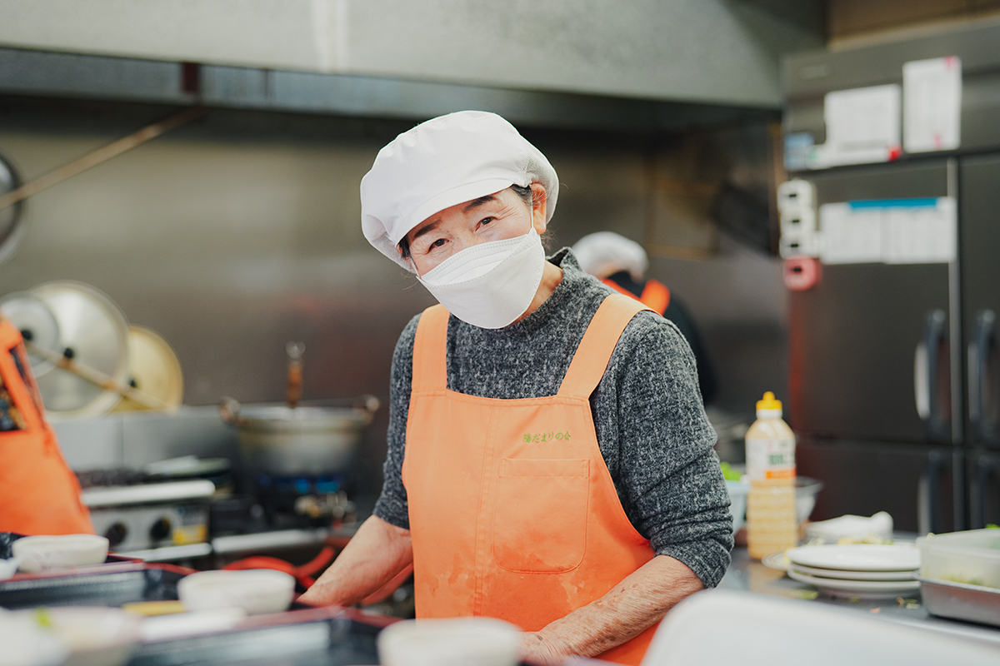
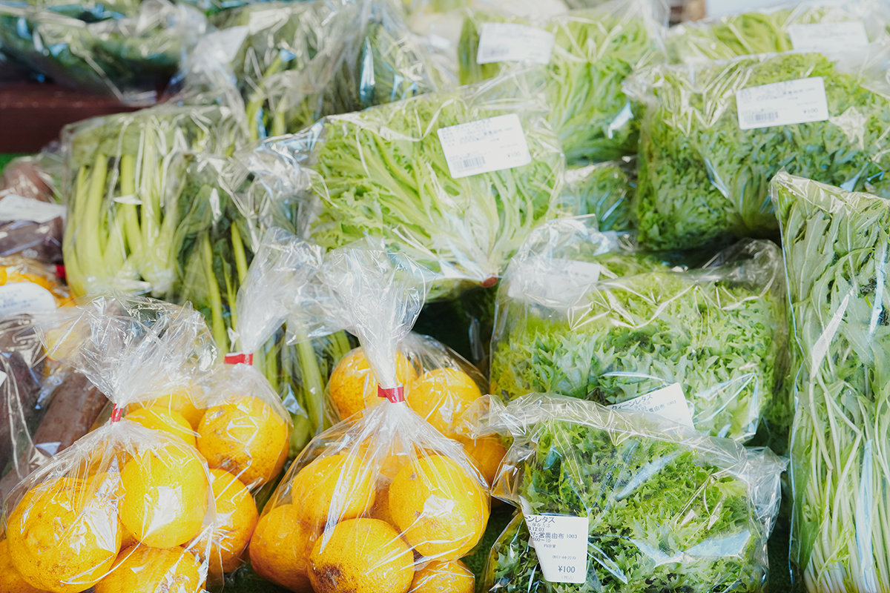
«Хидамари сёкудо»
- Адрес
- префектура Оита, город Юфу, Юфуин-мати, Каваками, 2914-1
- Телефон
- +81 977-84-2270
- Часы работы
- 11:00–15:00 (последний заказ в 14:30)
- Выходные
- вторник
Кофе
«Кохи кобо Мокуба»: зёрна, которые хочется держать дома
Попробовав кофе «Мокуба» однажды, многие становятся его постоянными поклонниками. С открытия в 1977 году здесь продают только зёрна собственной обжарки, и их мягкий глубокий аромат очень подходит к лёгкому воздуху Юфуина. Хозяйка сама печёт торты, и они тоже пользуются успехом.
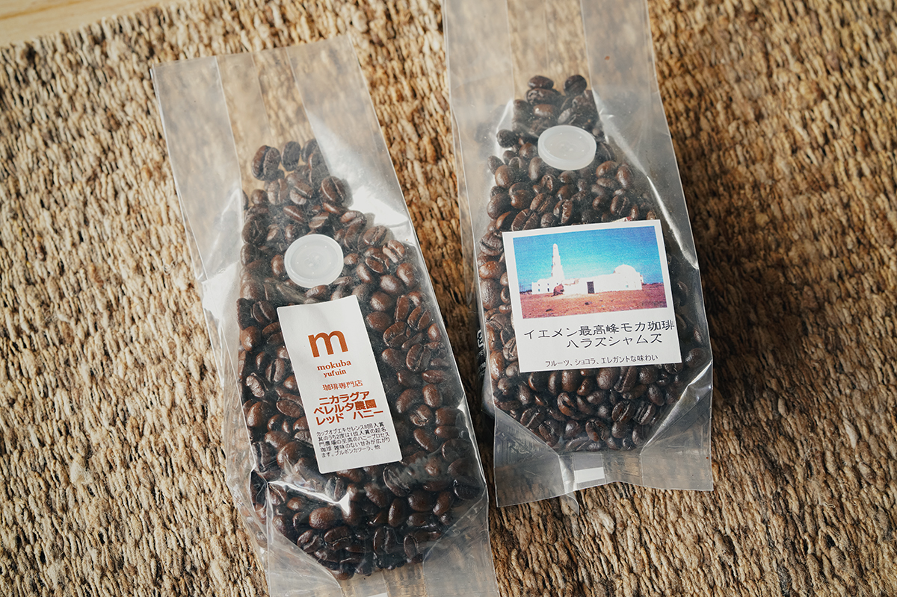
Хозяин так любит кофе, что за его рассказами и пробными чашками легко забыть о времени. Мы купили йеменский «Хараз Шамс», один из лучших сортов страны, откуда пошёл кофе мокко, и никарагуанский кофе с фермы Перальта, обработанный методом «ред хани», со свежим послевкусием.
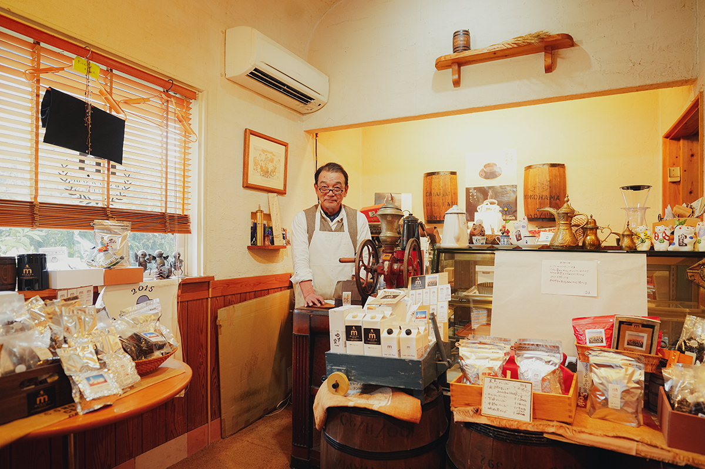
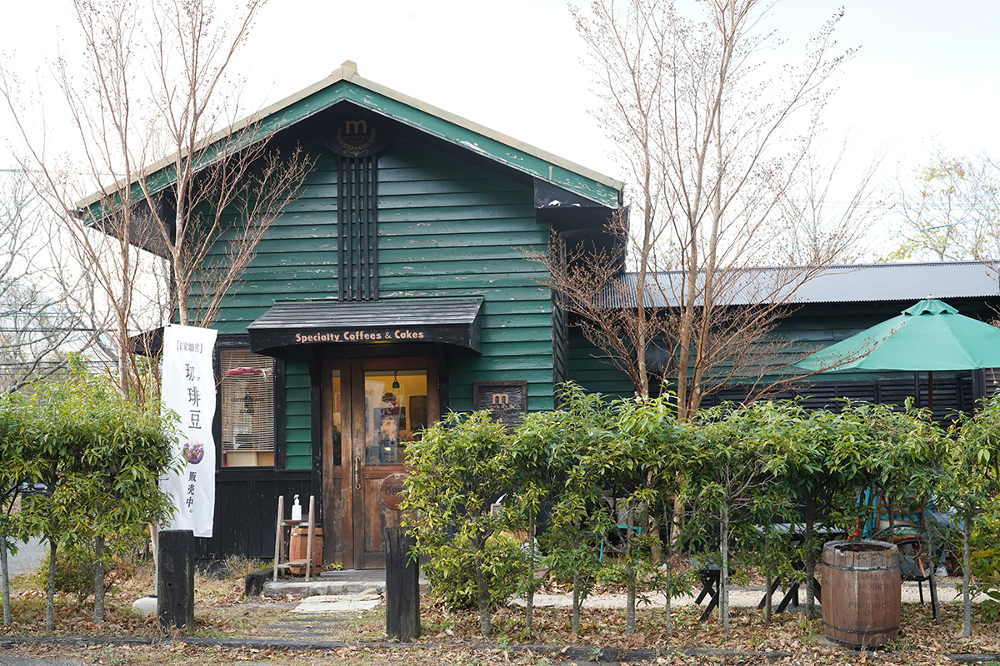
«Кохи кобо Мокуба»
- Адрес
- префектура Оита, город Юфу, Юфуин-мати, Цукахара, 4-35
- Телефон
- +81 977-85-3385
- Часы работы
- 13:00–17:00
- Выходные
- с понедельника по четверг
Фото: Адзуса Сигэнобу.